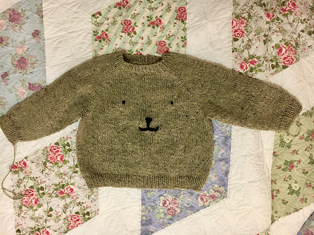

Baby Bamesweater (Bear Sweater🧸)
The sweetest sweater I'll ever knit.
I have never and will never knit a sweater as cute as this one. It is the most delightful and sweet object to come off my needles. Allow me to introduce you to the Bamesweater:

I knit the Bamesweater for my niece, Sadie. I found it on Instagram through a designer I follow. I think her name is Mette Wendelboe Okkels, but her company website is all in Norwegian, so I’m not 100% sure about that. Anyways, her pattern company, Petite Knit is lovely. All the designs are elegant, basic wearable pieces that seem like they’ll be timeless closet staples.
She has a variety of children’s patterns, and I fell in love with this Bamesweater
I think this is Norwegian for “bear sweater” ?
the moment I saw it.
The pattern is a basic raglan design in a DK weight yarn which is finished by embroidering a teddy bear face on the garment front. It is a sweet, gender-neutral, joyful gift for new babies in your life. I cannot recommend this pattern enough.
Sadie was too small for the sweater when I gifted it (children’s sizing is brutally HARD for non-parent folk), but I’ll add a picture to this page when she is big enough this winter!
Here’s more about the my Bamesweater:
- Check out my Ravelry page for this project!
- Pattern: Bamesweater
- Designer: Mette Wendelboe Okkels, Petite Knit
- Yarn Used: Rowan Felted Tweed
- Colorways: 190 Stone
- Recipient: Sadie 👶